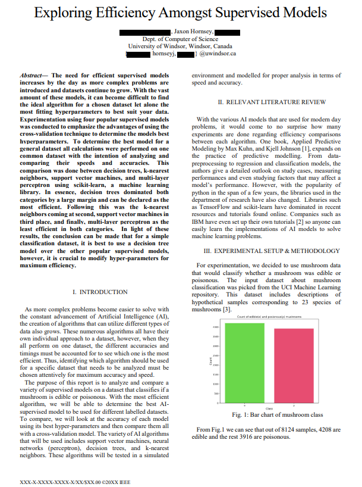

Exploring Efficiency Amongst Supervised Models

Purpose and Environment
This paper is the result of a collaboration with myself and 2 other peers. We completed this project on schedule by setting ourselves milestones along with having tri-weekly meetings.Four supervised models (K Nearest Neighbors, Decision Trees, Multi-layer Perceptron, and Support Vector Machine) were tested on a classification dataset provided by UC Irvine Machine Learning Repository, the dataset consisted of 8124 Instances and 22 Attributes. The purpose of our tests was to determine the best prediction accuracy and speeds between our models and for this, we also needed to find our best hyperparameters.
The code for this project was written in the jupyter-notebook environment and coded in Python. Multiple Python libraries were also used for this project such as scikit-learn, pandas, numpy, and matplotlib. The scikit-learn library has standard functions for the implementation of each of our 4 models. The library also provides a grid search cross-validation method that finds the best hyper parameters.
Our Project Consisted of These Main Milestones
- Retrieve and Modify the Data.
- To modify the data we used pandas to convert the excel data into a data frame.
- Converted string values to numerics to be used by models.
- Separated classification results to predict.
- Create a Training set for Each Model to Learn from.
- Implemented the train_test_split method from sklearn to split our data into random train and test subsets.
- Use our random subsets as our test set for each model.
- Run Identical Tests for Each Model.
- Record time and accuracy with bad parameters.
- Record time and accuracy with the best parameters.
- Try with different numerous test sets and average out results.
- Create a Statistical Model to Appropriately Demonstrate the Results.
- Use matplotlib and seaborn to graph results using classification tables, confusion matrices, and any other appropriate visual.
- Compare and Delve Deeper into the Results.
- Look at the results for each algorithm against itself, and the advantages of using grid search cross-validation.
- Compare the best results of each algorithm against one other and look into why that may be.